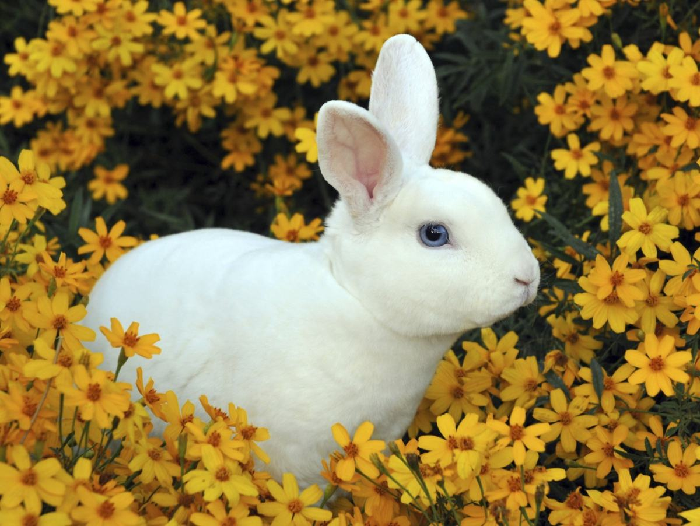
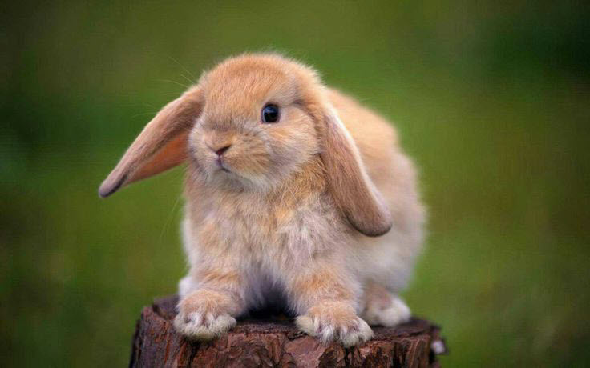
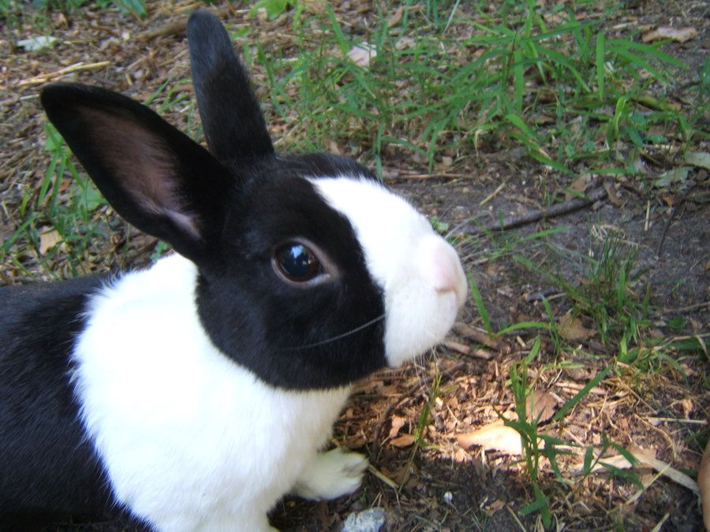
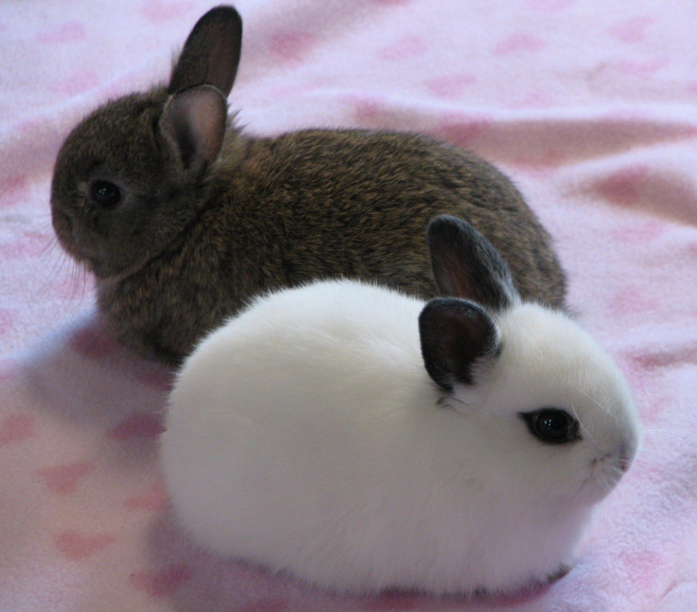
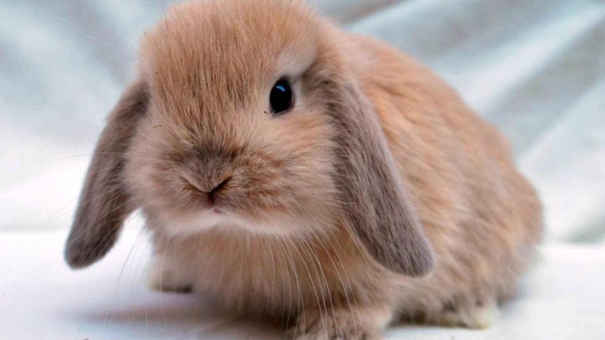

Top 5 Rabbit Breeds:
-
Mini Rex

Size: 3.5–4.5 lbs Appearance: Long, erect ears and short necks. Short, smooth fur that is extremely dense and can be a variety of colors. Rexes generally have rounded backs with well-developed shoulders. Personality: Usually very calm and quiet but may squirm if held too tightly. Ease of Care: Needs less grooming than most breeds due to their shorter fur. Compatibility With Children: Usually calm and friendly with children but can squirm when held. Health Concerns: Nothing beyond standard rabbit concerns. Lifespan: 5–7 yearsHolland Lop Size: 2-4 lbs Appearance: Large, floppy ears with medium-length fur in broken or solid coloring. Personality: Very energetic, active, and friendly but will resist being picked up and held. Ease of Care: Sheds heavily in the summer months, so needs more brushing during that time. Should be let out to roam fairly often. Compatibility With Children: Incredibly friendly with children but will squirm when they don’t want to be held. Health Concerns: Minimal—nothing beyond standard rabbit health concerns/care. Lifespan: 7–14 yearsDutch Size: 4–5.5 lbs Appearance: Very distinctive black and white coloring. They have dark ears and bottoms and white shoulders, belly, front legs—plus, a wedge of white fur up the front of their face. Personality: Calm and gentle but will easily get depressed if left cooped up too long. Very sociable. Ease of Care: Sheds heavily in summer months. Needs to be able to run often. Compatibility With Children: Very calm and friendly with children. Health Concerns: No notable health concerns beyond regular rabbit care. Lifespan: 5–8 yearsDwarf Hotot Size: 2.5–3.5 lbs Appearance: Very small breed with small, upright ears. Very distinctive all-white coat with dark spots around the eyes. Personality: Friendly, and therefore needs frequent human interaction. Very amenable to being handled frequently. Ease of Care: Does fine in smaller cages than most breeds due to their small size. Food volume needs to be monitored so that they don't overeat. Compatibility With Children: Bond well to their owners, making them very good pets for children. Health Concerns: Higher-than-usual risk for malocclusion. Lifespan: 7–10 yearsMini Lop Size: 4.5–6 lbs Appearance: Very round body with long, thick ears and a large head. Personality: Greatly enjoy cuddling and human interaction, including being pet and held. Ease of Care: Needs to be able to run out of their enclosures. More likely to chew random objects than other breeds. Compatibility With Children: Incredibly sweet and easygoing, making them ideal pets for children. Health Concerns: No notable health concerns other than those common to all rabbits. Lifespan: 5–10 years source from: https://pethelpful.com/rabbits/Best-Pet-Rabbit-Breeds